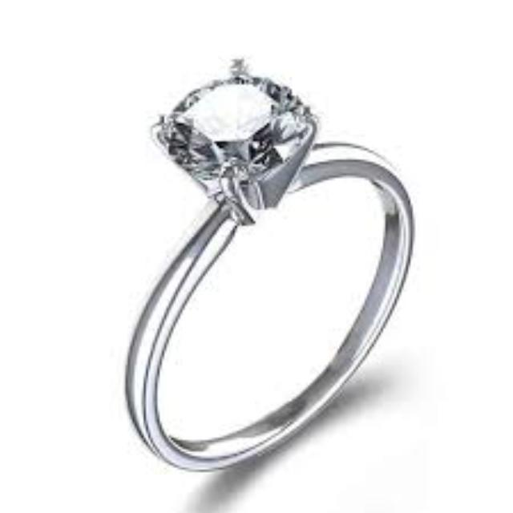
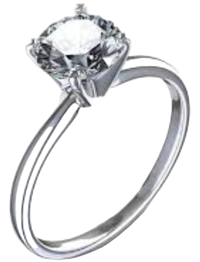
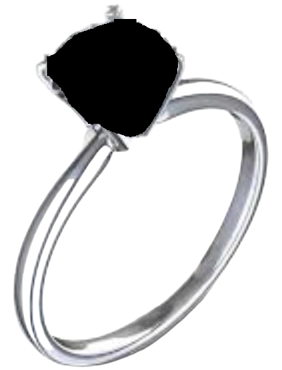
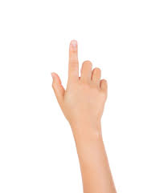
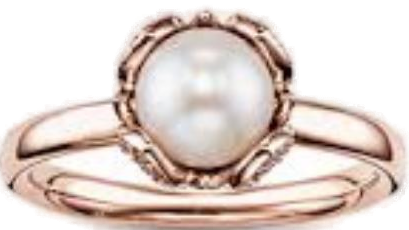

High-precision Computer Vision pipeline for ring matching and stone detection utilizing BiRefNet and YOLO.


ZhengPeng7/BiRefNet
Removes background (Transparent)

Stones masked/removed

Image is skipped. No processing.

Saved to /no_stone_detect folder.
Generates CLIP embeddings.
Uses FAISS Chromadb (Index)
Input Path -> Process -> Find Similar -> Return Top 10